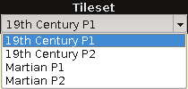
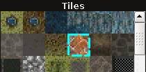
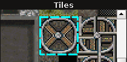
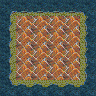
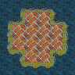
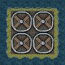
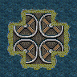
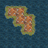
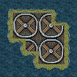

[Open RPG Maker Tutorials]->[Using the Map Editor]->[Draw Mode]
- Step 1: First select a tile to use from the tile selector.
- Step 1.1: Select a tileset from the combo box
- Click on the combo box, and then click on a tileset's name from the drop down menu. The tiles in that set will then appear below.
- 
- Step 1.2: Select a tile from the tileset
-
Click on a tile to select it, or click and drag to select multiple tiles (up to a 6x6 region).
A border will be drawn around the tiles to indicate that they're selected.
-  
- Step 2: Choose one of the four drawing tools to use by clicking on it.
 Rectangle Tool
Rectangle Tool Circle Tool
Circle Tool Fill Tool
Fill Tool Pencil Tool
Pencil Tool- Step 3: Draw the tile(s) to the map, depending on what tool you selected
- Step 3.1: For the rectangle/circle tool
- Click and drag on the map to draw either a rectangle of the given tile, or a circle.
-  
- If multiple tiles are selected then the drawn shape will be a repeated pattern of the selected tiles.
-  
- Step 3.2: For the fill tool
- Click on a tile on the map to perform a flood fill on that tile. If multiple tiles are selected then the flood fill will be a repeating pattern fill of the selected tiles.
-
- Step 3.3: For the pencil tool
- Click on the map to place the selected tile there, or click and drag to continuously draw that tile to the map. If multiple tiles are selected then a box will be made of the current selection.
-  